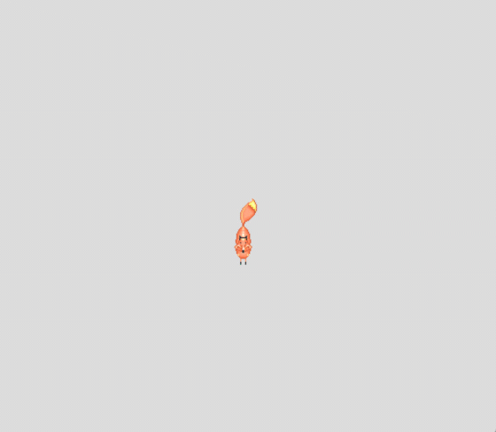
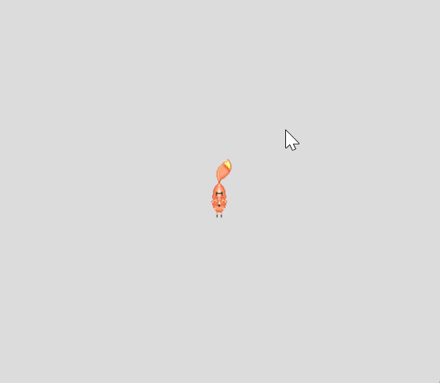
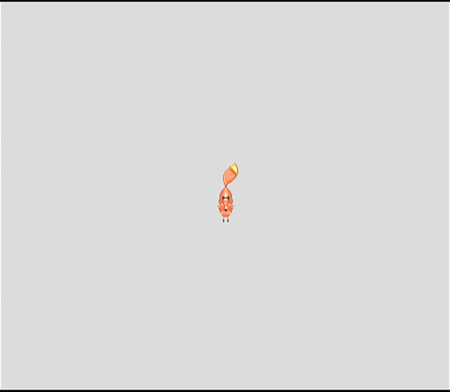
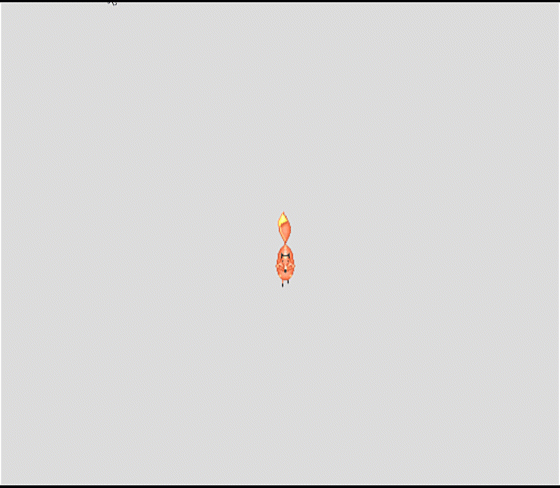

Fox Simulation Project

Get the main fox moving around the screen using the WASD keys and facing the correct direction.

Make the fox grow or shrink depending on where you click your mouse on the screen.

Add a special mode where the fox moves on its own, changes size/colors, and resets when needed.

Turn the static movement into an animated loop by flipping through the available array images.
Add random-walking computer foxes that automatically change color when the player gets too close.
Your max grade is based on the number of completed features:
| Features Completed Successfully | Maximum Base Score Percentage |
|---|---|
| 1 Feature completely functional | Up to 40% |
| 2 Features completely functional | Up to 60% |
| 3 Features completely functional | Up to 80% |
| 4 Features completely functional | Up to 90% |
| 5 Features completely functional | Up to 100% |